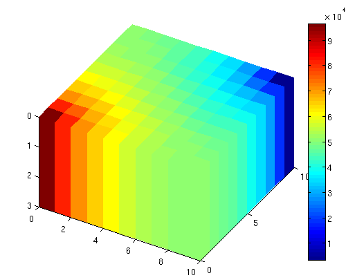
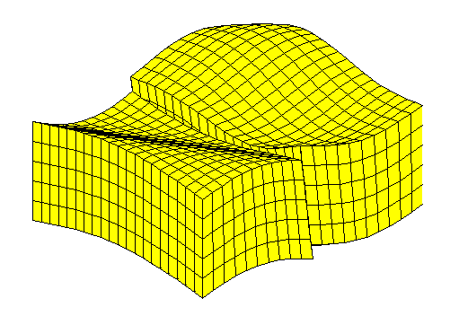

MRST
MRST is a free open-source software for reservoir modelling and simulation, developed primarily by the Computational Geosciences group in the Department of Mathematics and Cybernetics at SINTEF Digital.
On the MRST webpage, you can find documentations and tutorials.
The application domain of MRST is primarily reservoir simulation tool but it has been designed for prototyping and flexibility. Still the following tutorials which deal with grid visualization and grid generation will be usefull for BattMo users. We use a flexible fully unstructured grid format.
We plan to add more specific tutorials.
Visualization Tutorial

Grid Factory Tutorial
